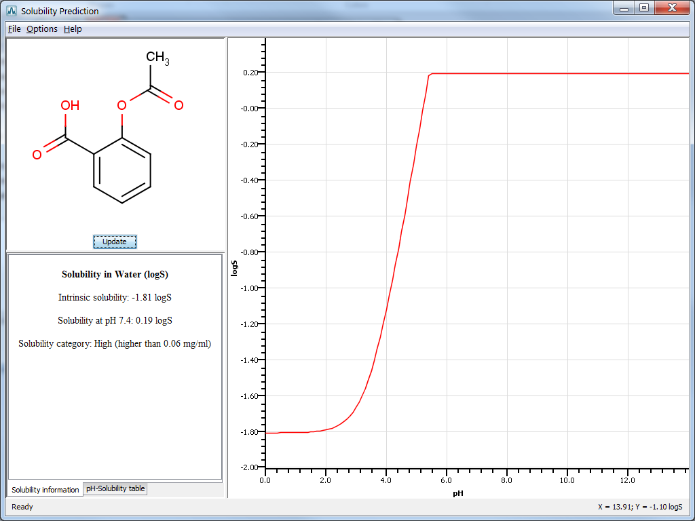

Aqueous solubility is one of the key factors that determines the oral bioavailability of a drug. Being related to the absorption and distribution in the ADME-Tox, it is one of the main physico-chemical properties to be optimized in drug discovery.
There are many types of solubility defined in the drug discovery literature. Most methods developed for in-silico prediction calculates intrinsic solubility for the given compound. Intrinsic solubility of a compound is the concentration in equilibrium with the solid phase that dissolved into the solution. Instead of the concentration its natural logarithm, logS, is used for convenience in the literature.
ChemAxon's solubility predictor is able to calculate the aqueous solubility of a compound at a given pH, its intrinsic solubility and its pH dependence, too. It can provide quantitative result, giving the solubility in logS, mg/mL or mol/L. In case only a rough estimation is needed, the plugin can give a solubility category as a qualitative measure.
Like ChemAxon's other calculators for physico-chemical properties (e.g. pKa, logP), the prediction is made using only structural information of the molecule.
The solubility prediction functionality is built in different ChemAxon products.
The solubility predictor is integrated into MarvinSketch as a plugin, enabling prediction in a fast and easy way. The Solubility Plugin can be reached via the Calculations > Solubility menu.
It offers the following options for calculation:
Options menu
File menu
The result window displays the pH-logS plot and a table that with prediction results given in one of the following ways :
|  |
cxcalc [general options] [input files/strings] logs [logs options] [input files/strings]
logs options:
-h --help this help message
-U --unit measurement unit [mg/ml | mol/l | logS] (default:
logS)
-i --intrinsic intrinsic solubility (default: false)
-c --category solubility category (default: false)
-H --pH solubility at this pH (default: not set)
-l --lower (default: 0)
-u --upper (default: 14)
-s --step (default: 1)
Some examples on how to use the solubility predictor via cxcalc:
cxcalc logs -i true -H 7.4 molecules.smiles
cxcalc logs -U mol/l -l 7.0 -u 13.0 molecules.smiles
cxcalc logs -c true test.mol
evaluate -e "logS0()" "CC(O)=O"
evaluate -e "logS('7.0')" molecule.mol
evaluate -e "logSCategory()" molecule.mol